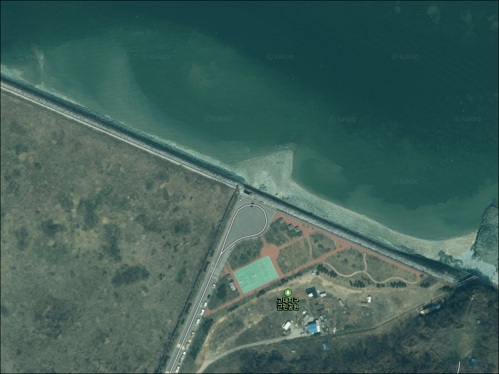
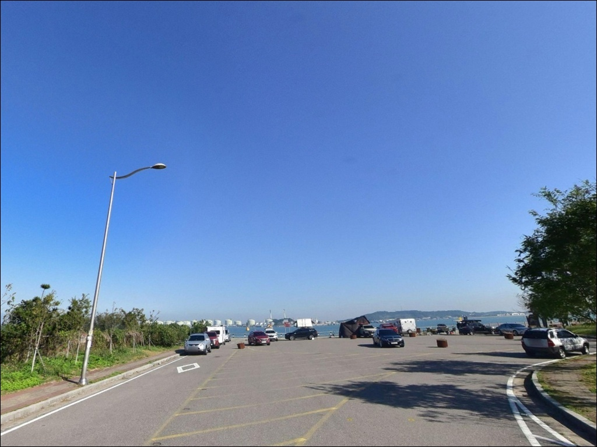
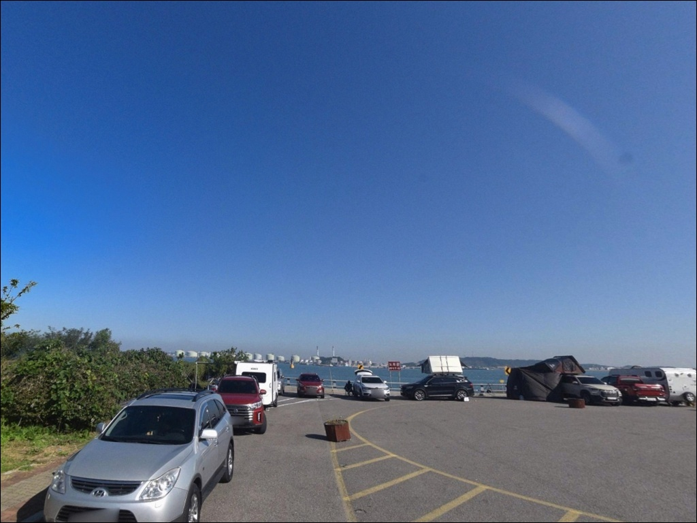
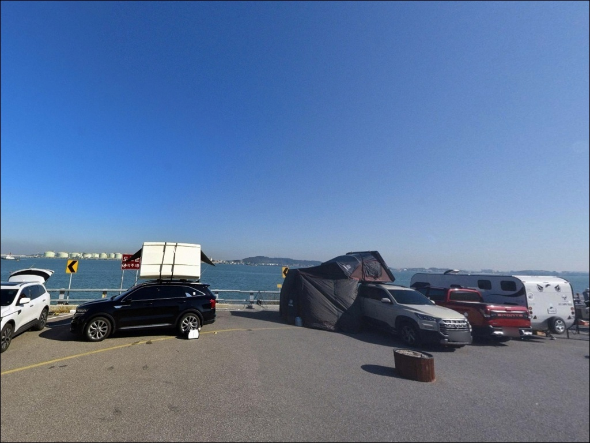
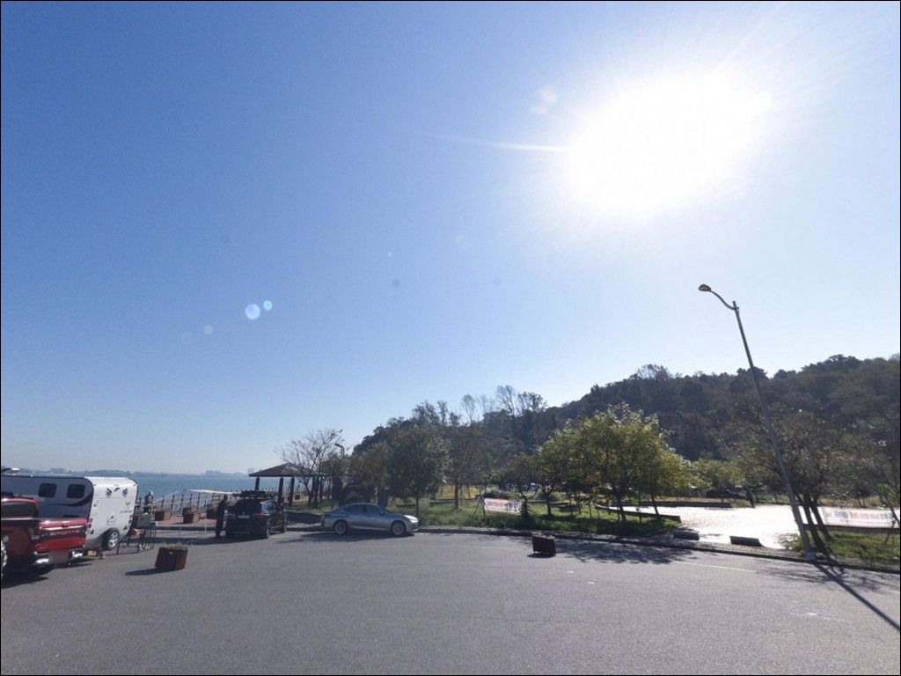
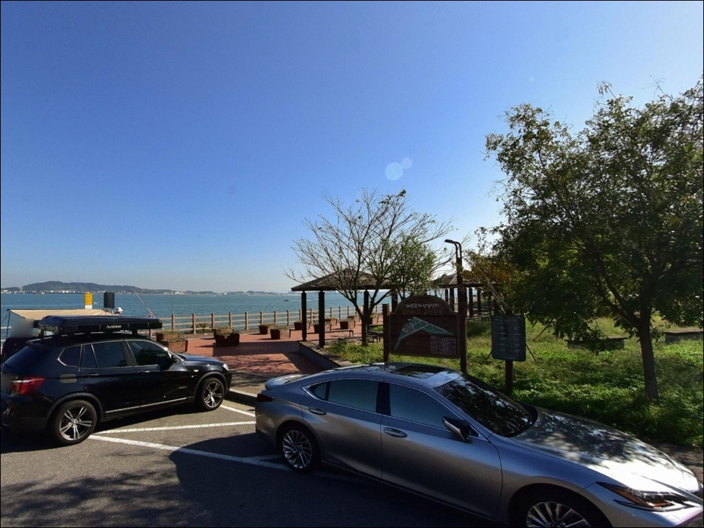
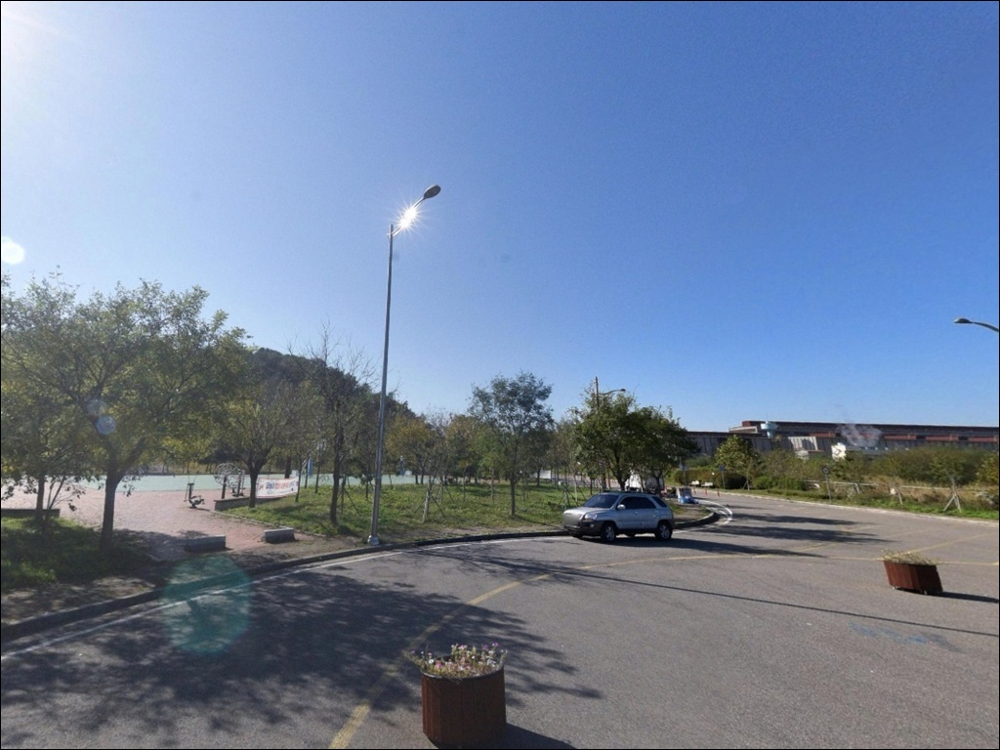
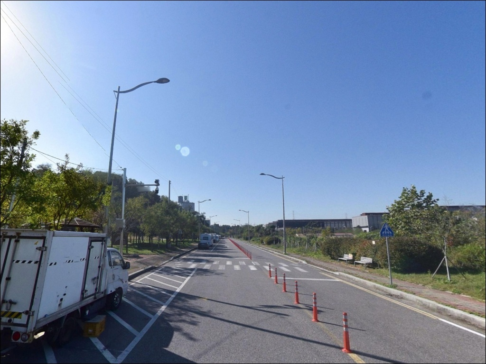
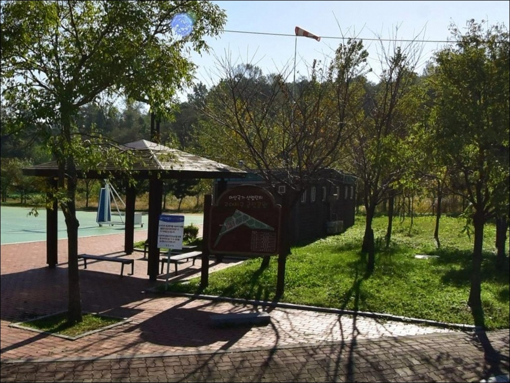

고대지구근린공원, 충남 당진시 노을빛이 스며드는 차박, 낚시 겸용 감성 장소


포인트 안내
고대지구근린공원
충남 당진시 송악읍 한진리 산 1-1
아산만 물때를 확인하지 않고
고대지구근린공원에 도착하면
드넓은 갯벌만 남아
원투 채비가 닿을 수심이 없는 상황을
마주칠 수 있습니다.
이 구간은 서해 최대 조차 해역 중 하나로
간조 시 수심이 급격히 낮아지는 구조이며,
만조 전후 타이밍을 벗어난 입장은
현장에서 낚시 자체가 어려워지는
포인트입니다.
이 글은 고대지구근린공원의
진입 여건, 차박 환경,
물때 기반 낚시 조건에 집중합니다.
조황 보장이나 특정 어종 단정은
이 글의 범위에 포함되지 않습니다.

1. 진입 동선과 포인트 접근성
서해안고속도로 송악IC에서 하차 후
지방도로를 따라 이동하면
고대지구근린공원까지 접근이 가능합니다.
공원 진입로는 포장도로로 정비되어 있어
승용차 기준 진입에 큰 어려움은 없는 편입니다.
SUV나 소형 캠핑 차량도
일반적인 공원 진입로 수준으로 이동 가능한 구조입니다.
주차는 공원 내 소형 주차장을
기본으로 활용하는 방식이 일반적입니다.
소형 기준 10대 내외 수용이 가능한 수준이며,
주변 도로 가장자리에 추가 주차가 가능한
구간도 있습니다.
회차 공간은 공원 부지 구조상
비교적 여유 있는 편입니다.
공원에서 한진포구까지는
해안산책로로 약 741m가 연결되어 있어
도보로 포구 방향 탐색도 가능합니다.
주말과 성수기에는 공원 이용객 차량이 늘어
주차 공간이 부족해질 수 있으니
평일 혹은 이른 시간 입장이 유리합니다.

2. 차박 환경 평가 및 야간 체류 여건
고대지구근린공원은 차박 후기가 꾸준히
올라오는 포인트입니다.
공원 특성상 가로등이 있어
야간에도 완전한 암흑 환경은 아니며,
산업단지와 인접한 구조상
조용한 외딴 해안과는 분위기가 다른 편입니다.
낚시 후 하룻밤 머무는 용도로는 나쁘지 않으나
주변 분위기를 현장에서 먼저 확인하는 편이 좋습니다.
아산만 내만 구조상 외해 직격 파도보다는
완만한 풍파 조건이 형성되는 편입니다.
야간에는 서해대교 방향 야경이 조망되어
낚시와 경관을 동시에 즐기려는 방문자에게
알려진 곳이기도 합니다.
공원 내 취사나 야영은
공원 이용 규정에 따라 달라질 수 있습니다.
출발 전 당진시 또는 공원 관리 기관에
취사 가능 여부를 확인하는 것이 먼저입니다.
차박을 메인으로 계획할 경우
성수기 주말 이용객 증가로 인한
소음과 주차 경쟁도 감안해야 합니다.


3. 주변 편의시설 및 인프라 현황
공원 내에는 공중화장실이 마련되어 있으며
관리 상태가 양호하다는 방문 후기가 다수 있습니다.
데크, 전망 스탠드, 운동기구, 파고라 등
기본 공원 시설도 갖춰져 있어
낚시 외 목적으로 방문하는 이용객도
편의 면에서 불편함은 적은 편입니다.
식사나 추가 물품 보충은
도보로 약 1km 거리의 한진포구 방향에서
해결이 가능합니다.
한진포구 일대에는 횟집과 식당이
여럿 자리하고 있어
낚시 후 현지 식사 동선으로 활용하기
좋은 위치입니다.
원거리 필요 물품이나 응급 상황 대응은
송악IC 방향 도심권까지 이동이 필요합니다.
출발 전 식수, 얼음, 낚시 채비 등
필요한 소품은 미리 갖추는 편이 안전합니다.

4. 진입 전 반드시 챙겨야 할 준비사항
이 포인트에서 방문 전 가장 먼저 해야 할 일은
물때 확인입니다.
아산만은 서해에서 조차가 가장 큰 해역 중 하나로
간조 시 광범위한 갯벌이 드러납니다.
바다타임에서 당진·아산만 기준 물때를 확인하고
만조 전후 2~3물 타이밍을 중심으로
출발 시각을 역산하는 것이 기본 전략입니다.
채비는 서해 펄·모래 혼합 지형에 맞는
원투용 구성으로 준비하는 편이 맞습니다.
바닥 재질 특성상 채비 손실 가능성도 있으니
여분 봉돌과 바늘은 넉넉하게 챙기는 것이 좋습니다.
구명조끼는 서해 연안 출조 시
기본 착용 장비입니다.
서해 조류 유속은 빠른 편이라
갯벌 및 석축 구간 미끄럼 주의도 필요합니다.
야간 낚시 계획이 있다면
헤드랜턴과 위치 표시 조명을 별도로 준비합니다.
기상청 예보는 출발 당일 아침
다시 한번 확인하는 편이 안전합니다.

5. 조차가 결정짓는 낚시 여건, 지형 분석
아산만은 서해에서 조차가 가장 큰 해역에 속합니다.
이 구간의 평균 조차는 6m를 넘으며
최대 9m에 이르기도 합니다.
간조 시 한진리 인근 삼각주와 갯벌이
광범위하게 드러나는 구조이며,
수심이 형성되는 시간대가 물때에 따라
크게 달라지는 포인트입니다.
지형은 완만한 경사로 이루어져 있으며
전방으로 던질수록 수심이 점진적으로 깊어지는 구조입니다.
조류 흐름은 창조·낙조 모두 유속이 있는 편이라
사리 전후에는 채비 컨트롤이 어려울 수 있습니다.
만조 전후 2~3시간이
이 포인트에서 원투 채비를 운용할 수 있는
현실적인 시간대입니다.
인근 한진포구 일대에는
수로와 어항 구조가 형성되어 있어
포구 방향으로 이동하면
수심 변화를 더 적극적으로 활용할 수 있습니다.
가기 전에 최신 조황은 꼭 검색해 보시기 바랍니다.


6. 이 포인트에 어울리는 낚시 스타일
고대지구근린공원에서 가장 잘 맞는 낚시 방식은
원투낚시입니다.
완만한 경사 지형과 서해 펄·모래 혼합 바닥은
원투 채비를 멀리 던져
수로 방향을 탐색하는 방식에 맞는 구조입니다.
망둥어, 숭어 등 서해 내만 연안에서
기대해볼 수 있는 어종을
만조 전후 들물 흐름에 맞춰 노리는 방식이
이 포인트의 지형과 잘 맞습니다.
루어낚시도 만조 전후 연안 탐색에
활용해볼 수 있습니다.
조류 흐름이 살아 있는 시간대에
소형 미노우나 지그헤드 리그로
석축 경계와 수로 방향을 천천히 탐색하는 방식이
이 지형에 어울립니다.
숭어나 농어 계열이
조류가 일어나는 만조 전후 구간에
연안 가까이 붙는 패턴을 보이는 편입니다.
들물 초기 연안에서는 망둥어 손낚시도
노려볼 수 있는 방식입니다.
긴 장비 없이 간단한 채비로 즐길 수 있어
가족 단위 방문객에게 어울리는 스타일입니다.
서해 내만에서 기대해볼 수 있는 어종으로는
망둥어, 숭어, 우럭, 노래미 등을
추정해볼 수 있으나, 어종 단정은 하지 않습니다.

7. 대안 포인트와 플랜 B 동선
공원 자체 여건이 맞지 않거나
물때상 낚시 가능 시간이 짧다면
도보 거리의 한진포구로 먼저 이동하는 방식이
현실적인 첫 번째 대안입니다.
한진포구는 방파제와 선착장 구조를 갖추고 있어
고대지구근린공원보다
낚시 효율이 높을 가능성이 있습니다.
차량으로 15분 내외 거리에 있는
석문방조제도 주목할 만한 대안입니다.
규모 있는 방조제 구조로
원투낚시와 루어낚시 모두 운용 가능하고,
차량 접근성도 양호한 편입니다.
고대지구근린공원을 베이스 캠프로 잡고
석문방조제를 탐색 포인트로 묶는 동선이
효율적입니다.
인근 안섬포구도
포구형 서해 낚시 포인트로 알려져 있습니다.
도비도항, 장고항 방향 권역은
차량으로 15~20분 거리에 있으며
당진 바다낚시의 주력 거점으로
선상낚시와 방파제 낚시 모두 가능한 곳입니다.
본격 낚시를 원한다면
이 권역으로의 이동도 하나의 판단입니다.

서해 물때를 알면
고대지구근린공원이 달라 보입니다
원투낚시 한 대 들고 당진 아산만 연안에서
조류가 들어오는 시간을 기다리는 스타일이라면
고대지구근린공원의 지형 조건은
나쁘지 않은 선택입니다.
만조 전후 시간대를 제대로 맞추면
조류 흐름이 살아 있는 연안을
충분히 활용할 수 있습니다.
반면 물때 확인 없이 도착하거나
간조 시간대를 잘못 잡으면
낚시 자체가 어려워지는 상황을
맞닥뜨릴 수 있습니다.
바다타임 물때 확인, 만조 전후 입장,
구명조끼 착용, 이 세 가지를 갖추고 간다면
원투 한 대로 서해 연안을 충분히 즐길 수 있는 곳입니다.
공원 화장실과 주차 여건이 갖춰져 있어
낚시 후 차 안에서 하룻밤 쉬어가는 여정을 계획한다면
취사 가능 여부만 먼저 확인해두면
서해 물때를 즐기며 머무는
차박 낚시 출조가 될 수 있는 곳입니다.